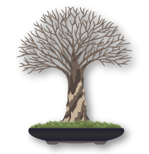

Broom style Bonsai (Hokidachi)
The Formal Upright style features a straight trunk with balanced branches, symbolizing strength and harmony. Maintain it through regular pruning and gentle wiring.
Explore the traditional artistic forms that define bonsai aesthetics. Each style represents a distinct approach to shaping and training trees, from structured formal designs to flowing natural expressions. Understanding these classic styles will deepen your appreciation for the artistry and intention behind each bonsai creation.
The Formal Upright style features a straight trunk with balanced branches, symbolizing strength and harmony. Maintain it through regular pruning and gentle wiring.
The Formal Upright is a common bonsai style found in nature where trees grow in full light without competition. It features a straight trunk with clear tapering.
Informal upright bonsai grow in a gentle S-shape, with branches at each curve and a trunk that tapers from thick at the base to thin at the top.
Cascade bonsai grow in tall pots, starting upright before bending downward in an S-shape, with branches alternating along the curves.
This style grows tall and crooked with branches only at the top, as the tree competes for sunlight in dense forests.